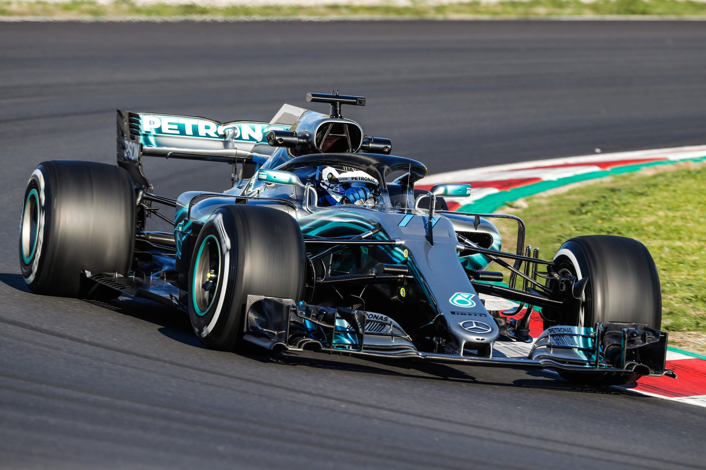
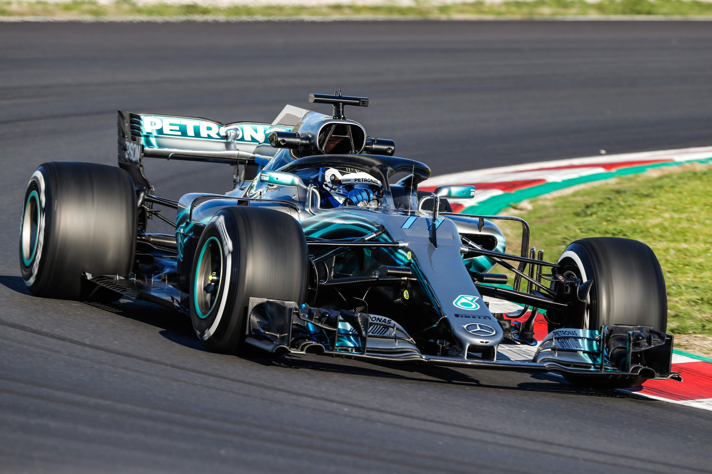

Första officiella racet på Silverstone 1950
F1 är en gammal motorsport som startades redan 1946 och blev ett världsmästerskap 1950 (Första världsmästerskapet för bilar). Det första officiella världsmästerskap-racet hölls på Silverstone vilket är en av de mest klassiska banorna som
man fortfarande kör på idag. På 50-talet var det Italien som började dominera de fösta åren med Ferrari, Alfa romeo och Masseratti som vinnare. Men redan på 60-talet började Storbrittanien vinna och var det laget som vann mest på 60, 70 och 80 talet.
F1 är en av de farligaste motorsporterna och på 50, 60, 70 talet var det extremt stor risk för att mista livet.
På bara de första 10 åren hade redan 16 förare dött och de ökade mer och mer när bilarna blev snabbare. De vanliga dödsorsakerna var eld och stora krascher. Säkerheten i bilarna var väldigt dålig och om man kraschade var det högst sannolikt att man inte skulle klara sig.

Detta är en bil från 70-talet
Utvecklingen av bilarna gick fort. Säkerheten blev bättre och bättre för varje dödsfall och banorna utveckaldes efter krascher. Bilarna blev längre, större
och fick mer luftmotstånd för att klara av fler svängar. Motorerna blev starkare och på 80-talet var det som svårast att köra. På 90-talet började bilarna bli mer låsta
vilket ledde till att bilarna såg likadana ut. I början på 2000-talet var det de bästa motorerna med V10 men 2013 byttes de till V6 isället och sedan dess har Mercedes vunnit 7 år i rad.
 
